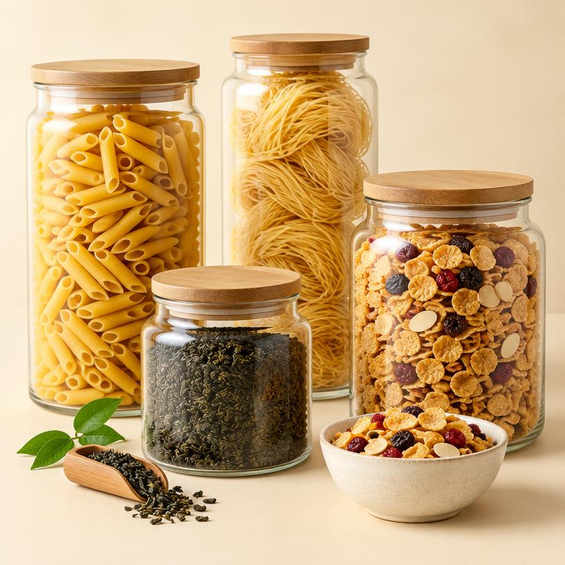
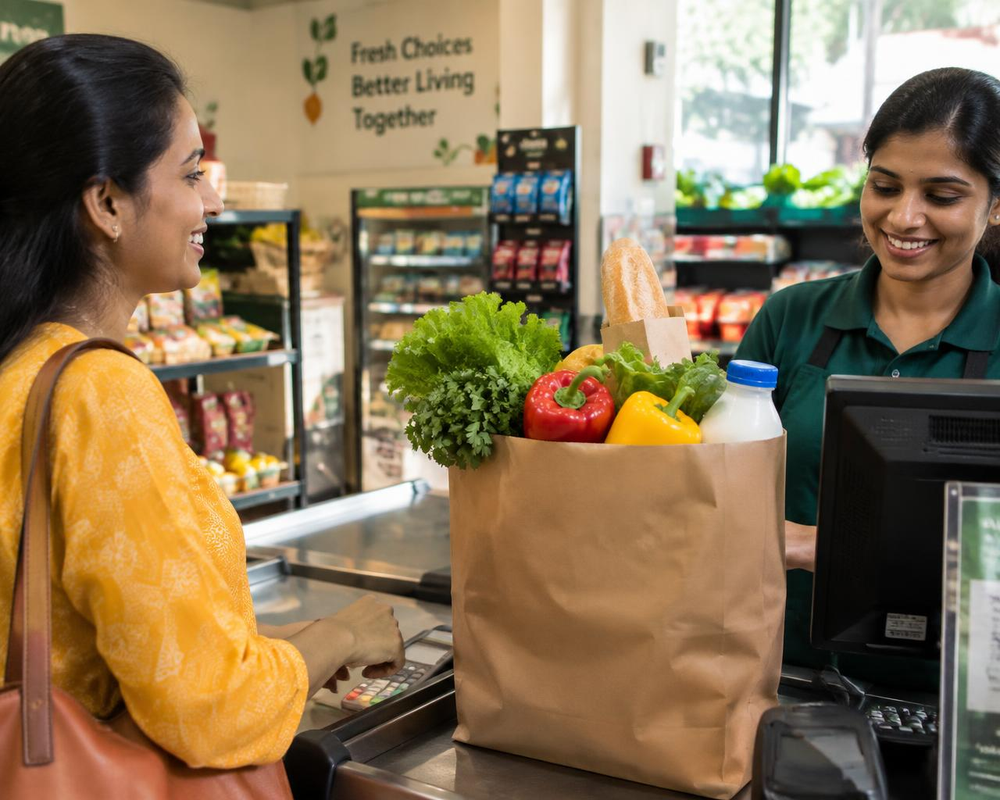

Everything you need. All under one roof.
Fresh groceries, daily essentials and more — conveniently available at Saini Supermarket in Baltana, Zirakpur.

everyday
Fresh every day
Fresh produce and everyday picks.
Everyday essentials
Useful things for home and family.
Wide selection
More aisles in one easy visit.
Local & convenient
Your neighbourhood store in Baltana.
Shop by category
Everything your household needs, organised in one place.
What you'll find here
A few familiar favourites from the store's product range. Browse the showcase, then visit Saini to see what's in-store.

Freshness you can see.
From seasonal fruits and vegetables to everyday dairy, find the fresh essentials that bring a little colour to the family table.
- Seasonal produce
- Dairy essentials
- Fruit for the week
- Everyday fresh picks
One store. Everyday essentials.
From the kitchen to the cleaning cupboard, it's easy to cover more of your list in one visit.
 KitchenPantry staples
BreakfastDairy & more
KitchenPantry staples
BreakfastDairy & more
 SnacksLittle favourites
SnacksLittle favourites

Packaged foodsEasy everyday picks CleaningHome care essentials
Personal careEveryday care
CleaningHome care essentials
Personal careEveryday care
A practical neighbourhood supermarket for the everyday list — simply visit in store.
Plan an in-store visitMore than just groceries.
Take a look around the aisles, fresh produce section and everyday essentials at Saini Supermarket.
 Well-organised aislesFresh produce
Well-organised aislesFresh produce
Everyday essentialsHelpful, local shoppingClear sections, a thoughtful everyday range and a comfortable place to pick up what home needs.
Visit the storeWhat's happening at Saini?
A little inspiration for your next visit. These are store themes, not online offers — today's selection is best checked in person.
See in-store highlightsFresh picksFollow the season
Seasonal fruit and vegetables for colourful everyday meals. Selection changes through the year.
Pantry staplesKeep the kitchen ready
Rice, atta, pulses, spices and other basics for the household list.
Around the homeEveryday essentials, close by
Browse home care and useful household products in the same convenient visit.
No live discounts or online deals are shown here. Please ask in-store about current product availability.
Your neighbourhood supermarket. Made for every day.
Everyday shopping should feel simple. Saini brings groceries, fresh produce, dairy, snacks and household essentials together in Baltana, Zirakpur.
for every day
A good local store starts with listening.
We welcome real feedback from our neighbourhood shoppers.
Customer feedback belongs here.
Verified customer reviews have not been supplied yet. This space is intentionally reserved for genuine feedback from Saini Supermarket shoppers.
Replace this space with a real customer quote once it has been shared and approved.— Add a verified shopper name or leave anonymous
Come shop with us.
Find groceries, fresh produce and household essentials at your neighbourhood supermarket.
Phone / WhatsApp and exact opening hours have not been published in the current business information. Please confirm these details before visiting.
Your everyday shopping, made simple.
Visit Saini Supermarket for groceries, fresh produce and everyday household essentials.